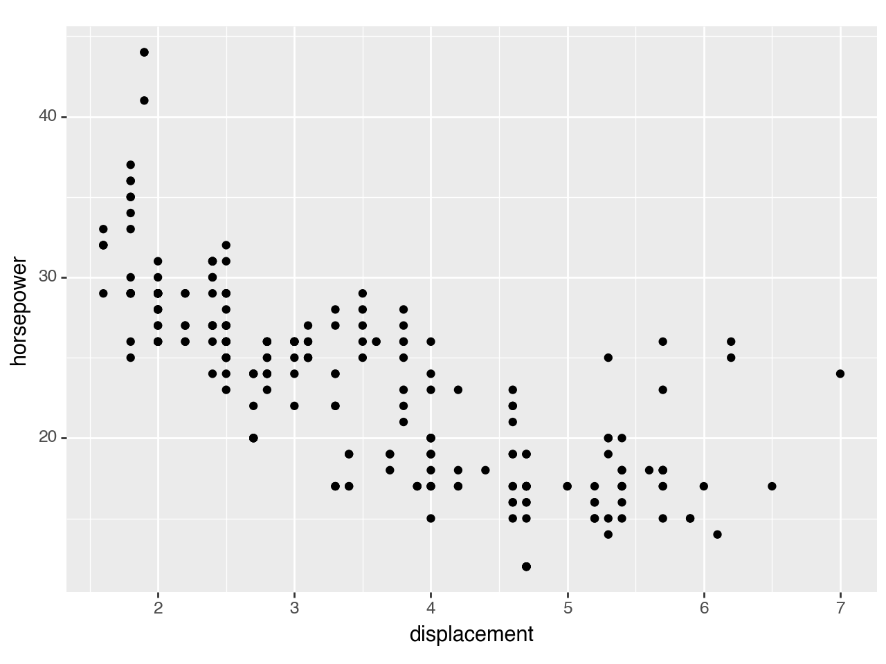
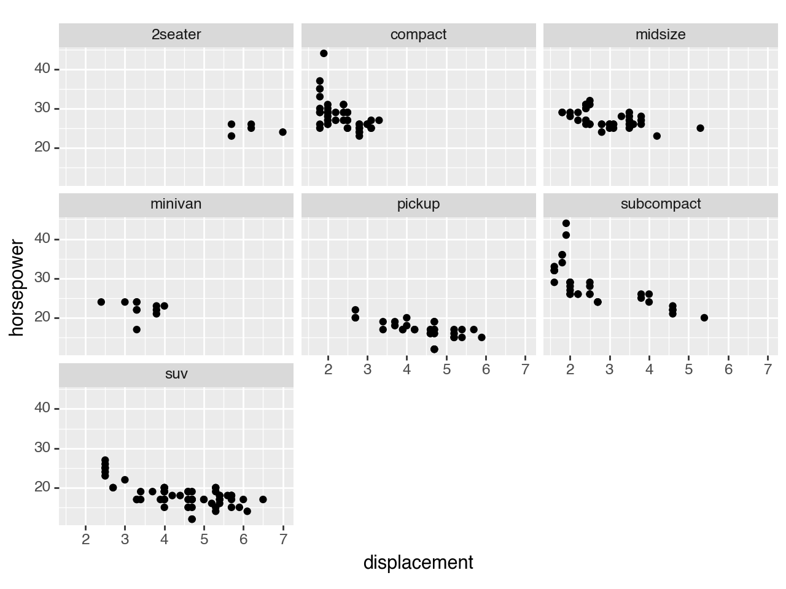
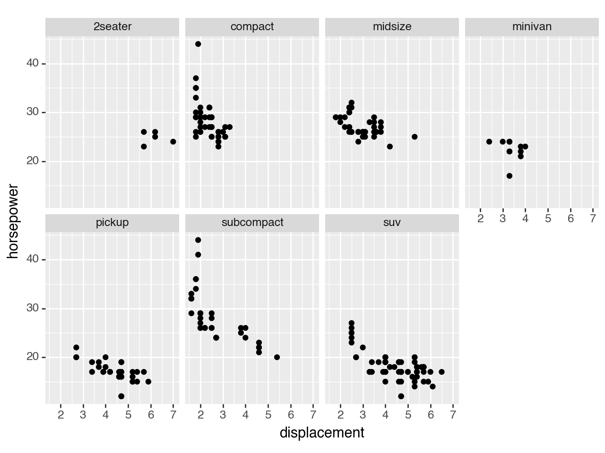
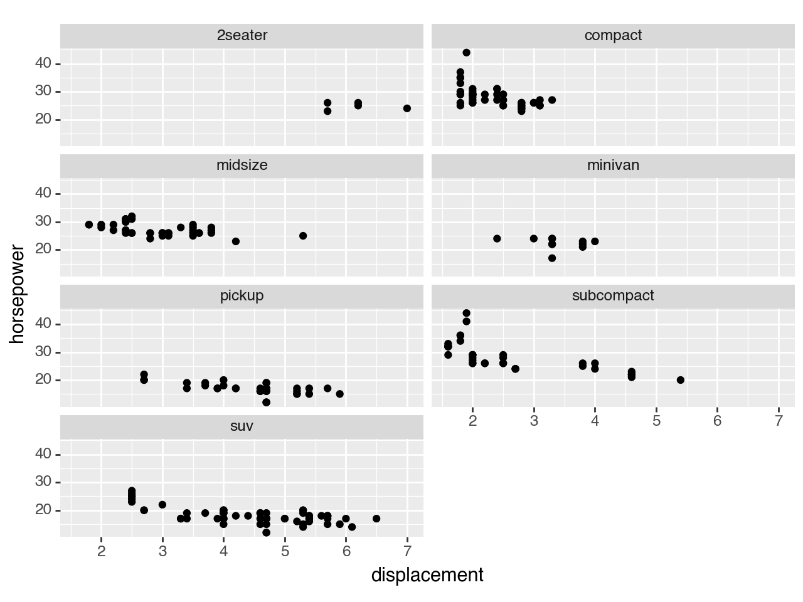
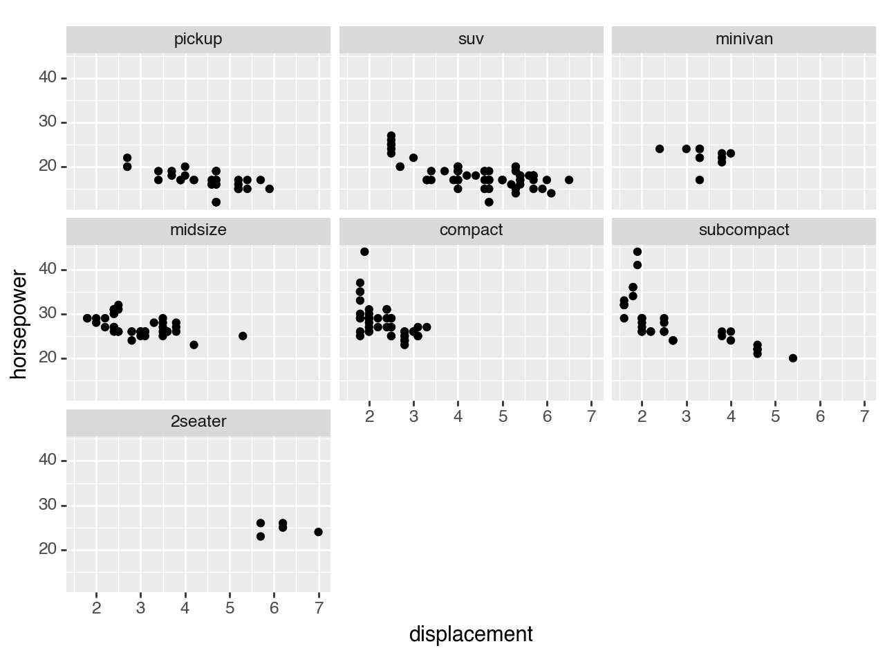
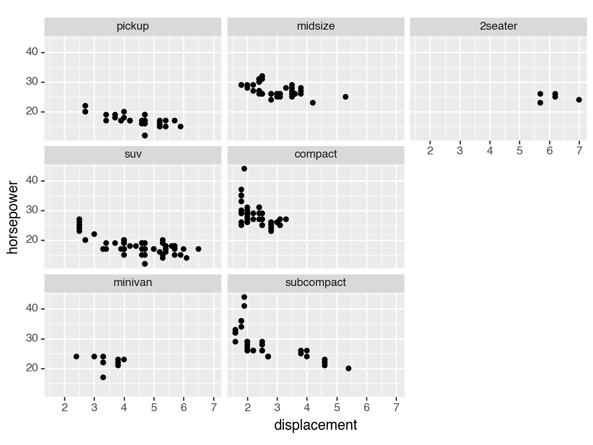
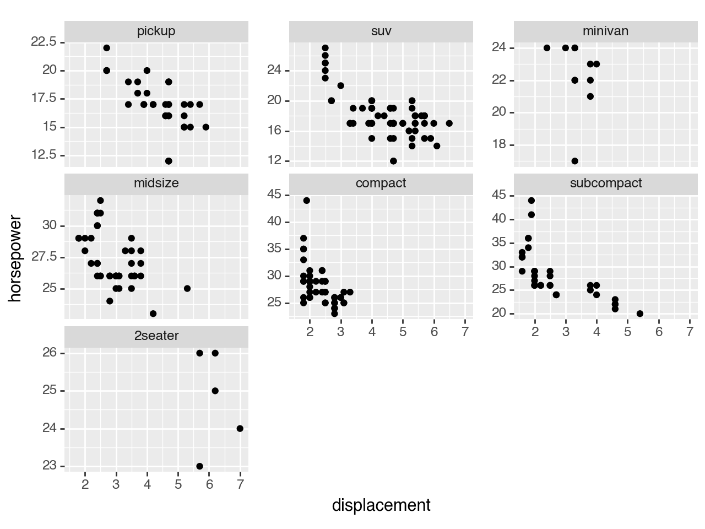
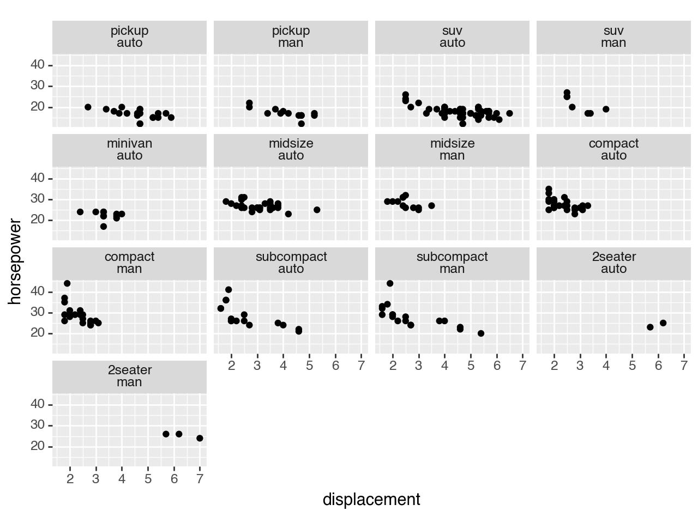

plotnine.facets.facet_wrap¶
- class plotnine.facets.facet_wrap(facets: str | list[str], *, nrow: int | None = None, ncol: int | None = None, scales: Literal['fixed', 'free', 'free_x', 'free_y'] = 'fixed', shrink: bool = True, labeller: Literal['label_value', 'label_both', 'label_context'] = 'label_value', as_table: bool = True, drop: bool = True, dir: Literal['h', 'v'] = 'h')[source]¶
Wrap 1D Panels onto 2D surface
- Parameters:
- facets
formula|tuple|list Variables to groupby and plot on different panels. If a formula is used it should be right sided, e.g
'~ a + b',('a', 'b')- nrow
int, optional Number of rows
- ncol
int, optional Number of columns
- scales
strin['fixed', 'free', 'free_x', 'free_y'] Whether
xoryscales should be allowed (free) to vary according to the data on each of the panel. Default is'fixed'.- shrinkbool
Whether to shrink the scales to the output of the statistics instead of the raw data. Default is
True.- labeller
str|function How to label the facets. If it is a
str, it should be one of'label_value''label_both'or'label_context'. Default is'label_value'- as_tablebool
If
True, the facets are laid out like a table with the highest values at the bottom-right. IfFalsethe facets are laid out like a plot with the highest value a the top-right. Default itTrue.- dropbool
If
True, all factor levels not used in the data will automatically be dropped. IfFalse, all factor levels will be shown, regardless of whether or not they appear in the data. Default isTrue.- dir
strin['h', 'v'] Direction in which to layout the panels.
hfor horizontal andvfor vertical.
- facets
Examples¶
[1]:
import pandas as pd
from plotnine import (
ggplot,
aes,
geom_point,
labs,
facet_wrap,
theme,
element_text
)
from plotnine.data import mpg
Facet wrap¶
facet_wrap() creates a collection of plots (facets), where each plot is differentiated by the faceting variable. These plots are wrapped into a certain number of columns or rows as specified by the user.
[2]:
mpg.head()
[2]:
| manufacturer | model | displ | year | cyl | trans | drv | cty | hwy | fl | class | |
|---|---|---|---|---|---|---|---|---|---|---|---|
| 0 | audi | a4 | 1.8 | 1999 | 4 | auto(l5) | f | 18 | 29 | p | compact |
| 1 | audi | a4 | 1.8 | 1999 | 4 | manual(m5) | f | 21 | 29 | p | compact |
| 2 | audi | a4 | 2.0 | 2008 | 4 | manual(m6) | f | 20 | 31 | p | compact |
| 3 | audi | a4 | 2.0 | 2008 | 4 | auto(av) | f | 21 | 30 | p | compact |
| 4 | audi | a4 | 2.8 | 1999 | 6 | auto(l5) | f | 16 | 26 | p | compact |
Basic scatter plot:
[3]:
(
ggplot(mpg, aes(x='displ', y='hwy'))
+ geom_point()
+ labs(x='displacement', y='horsepower')
)

[3]:
<Figure Size: (640 x 480)>
Facet a discrete variable using facet_wrap():
[4]:
(
ggplot(mpg, aes(x='displ', y='hwy'))
+ geom_point()
+ facet_wrap('class')
+ labs(x='displacement', y='horsepower')
)

[4]:
<Figure Size: (640 x 480)>
Control the number of rows and columns with the options nrow and ncol:
[5]:
# Selecting the number of columns to display
(
ggplot(mpg, aes(x='displ', y='hwy'))
+ geom_point()
+ facet_wrap('class',
ncol = 4 # change the number of columns
)
+ labs(x='displacement', y='horsepower')
)

[5]:
<Figure Size: (640 x 480)>
[6]:
# Selecting the number of rows to display
(
ggplot(mpg, aes(x='displ', y='hwy'))
+ geom_point()
+ facet_wrap('class',
nrow = 4 # change the number of columns
)
+ labs(x='displacement', y='horsepower')
)

[6]:
<Figure Size: (640 x 480)>
To change the plot order of the facets, reorder the levels of the faceting variable in the data.
[7]:
# re-order categories
mpg['class'] = mpg['class'].cat.reorder_categories(['pickup', 'suv','minivan','midsize','compact','subcompact','2seater'])
[8]:
# facet plot with reorded drv category
(
ggplot(mpg, aes(x='displ', y='hwy'))
+ geom_point()
+ facet_wrap('class')
+ labs(x='displacement', y='horsepower')
)

[8]:
<Figure Size: (640 x 480)>
Ordinarily the facets are arranged horizontally (left-to-right from top to bottom). However if you would prefer a vertical layout (facets are arranged top-to-bottom, from left to right) use the dir option:
[9]:
# Facet plot with vertical layout
(
ggplot(mpg, aes(x='displ', y='hwy'))
+ geom_point()
+ facet_wrap('class',
dir = 'v' # change to a vertical layout
)
+ labs(x='displacement', y='horsepower')
)

[9]:
<Figure Size: (640 x 480)>
You can choose if the scale of x- and y-axes are fixed or variable. Set the scales argument to free-y, free_x or free for a free scales on the y-axis, x-axis or both axes respectively. You may need to add spacing between the facets to ensure axis ticks and values are easy to read.
A fixed scale is the default and does not need to be specified.
[10]:
# facet plot with free scales
(
ggplot(mpg, aes(x='displ', y='hwy'))
+ geom_point()
+ facet_wrap('class'
, scales = 'free_y' # set scales so y-scale varies with the data
)
+ theme(subplots_adjust={'wspace': 0.25}) # add spaceing between facets to make y-axis ticks visible
+ labs(x='displacement', y='horsepower')
)

[10]:
<Figure Size: (640 x 480)>
You can add additional information to your facet labels, by using the labeller argument within the facet_wrap() command. Below we use labeller = 'label_both' to include the column name in the facet label.
[11]:
# facet plot with labeller
(
ggplot(mpg, aes(x='displ', y='hwy'))
+ geom_point()
+ facet_wrap('class', labeller='label_both')
+ labs(x='displacement', y='horsepower')
)
[11]:
<Figure Size: (640 x 480)>
You can add two discrete variables to a facet:
[12]:
# add additional column for plotting exercise
mpg["transmission"] = mpg['trans'].map(lambda x: "auto" if "auto" in x else "man" if "man" in x else "")
[13]:
# inspect new column transmission which identifies cars as having an automatic or manual transmission
mpg.head()
[13]:
| manufacturer | model | displ | year | cyl | trans | drv | cty | hwy | fl | class | transmission | |
|---|---|---|---|---|---|---|---|---|---|---|---|---|
| 0 | audi | a4 | 1.8 | 1999 | 4 | auto(l5) | f | 18 | 29 | p | compact | auto |
| 1 | audi | a4 | 1.8 | 1999 | 4 | manual(m5) | f | 21 | 29 | p | compact | man |
| 2 | audi | a4 | 2.0 | 2008 | 4 | manual(m6) | f | 20 | 31 | p | compact | man |
| 3 | audi | a4 | 2.0 | 2008 | 4 | auto(av) | f | 21 | 30 | p | compact | auto |
| 4 | audi | a4 | 2.8 | 1999 | 6 | auto(l5) | f | 16 | 26 | p | compact | auto |
[14]:
# facet plot with two variables on one facet
(
ggplot(mpg, aes(x='displ', y='hwy'))
+ geom_point()
+ facet_wrap(['class', 'transmission']) # use ~ + to add additional faceting variables
+ labs(x='displacement', y='horsepower')
)

[14]:
<Figure Size: (640 x 480)>